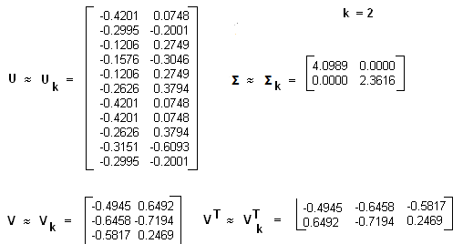

主题模型之LSI¶
在数据分析中，经常会使用非监督学习的聚类算法，对特征数据进行非监督的聚类。主题模型也是一种非监督的算法，目的是得到文本按照主题的概率分布。从这方面来说，主题模型和普通的聚类算法非常类似。然而两者还是有区别的。
聚类算法关注于从样本特征的相似度方面将数据聚类，采用数据样本之间的欧式距离、曼哈顿距离的大小聚类等等。主题模型是对文字中隐含主题的一种建模方法，如"人民的名义"和"达康书记"这两个词是具有很强主题相关度，但是如果通过词特征来聚类的话则很难找出，普通的聚类算法是不能考虑到隐含的主题。
潜语义索引算法原理¶
潜语义索引(Latent Semantic Indexing,简称LSI)，有时候也叫作Latent Semantic Analysis(简称LSA)是一种简单实用的主题模型。LSI是基于奇异值分解(SVD)的方法来得到文本的主题。
对于一个m\times n的矩阵A，可以分解为以下三个矩阵：
有时为了降低维度到k，SVD的分解可以近似写成：
现有m个文本，每个文本有n个词，A_{ij}则对应第i个文本的第j个词的特征值，这里的特征值可以使用基于预处理后的标准化TF-IDF值。
SVD分解以后，U_{il}对应第i个文本和第l个主题的相关度，V_{jm}对应第j个词和第m个词义的相关度，\Sigma_{lm}对应第l个主题和第m个词义的相关度。
LSI简单实例¶
先假设有下面10个词的三个文本d_1,d_2,d_3的词频TF对应矩阵如下：

这里直接简单的使用词频作为特征，在实际应用中最好使用TF-IDF值矩阵作为输入。假定主题数k=2，则通过SVD降维后得到的三个矩阵为：

从矩阵U_k可以看到词和词义之间的相关性，矩阵V_k中可以看到3个文本和两个主题的相关性。可以发现里面有负值，所以这样得到的相关度比较难解释。
通过LSI得到文本主题矩阵后可以用于文本相似度计算，一般采用余弦相似度。如计算第一个文本和第二个文本的余弦相似度得到：
总结¶
LSI是最早出现的主题模型，其算法原理很简单，一次奇异值分解就可以得到主题模型，同时解决了词义的问题。但是LSI算法也有很多的不足，导致现在实际应用中已基本不再使用。
主要存在的问题：
（1）SVD计算十分耗时，尤其在处理大文本的情况，高维度的奇异值分解是很难的；
（2）主题值的选取对结果的影响非常大，很难选择合适的k值；
（3）LSI得到的不是概率值，缺乏统计基础，结果难以直观解释；